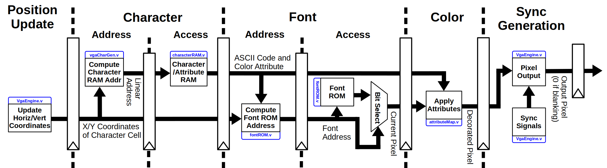

Nexys 4 DDR Reference Implementation¶
The Nexys 4 DDR (Using a Xilinx Artix-7 series XC7A100T-1CSG324C) was chosen as the reference implementation due to its copious hardware resources, interactive IO, and sufficient memory for a general purpose operating system to run using the onboard resources. The Raisin64 was connected to memory-mapped peripherals providing access to the LEDs, Switches, and a custom written character oriented VGA controller.
SoC Peripherals¶
Included are several trivial IO devices such as the switch and LED interface. These simply wait to be enabled based on the present address and a simple memory map decoder, carrying out the input or output as dictated by the processor output enable and write signals.
IO Memory Map:
| Name | Base Address |
| LED Output | 0xFFFFC000_00004000 |
| Switch Input | 0xFFFFC000_00008000 |
| VGA Character/Attribute RAM | 0xFFFFC000_00040000 |
Simple IO Control:
////////// IO //////////
wire led_en, sw_en, vga_en;
memory_map memory_map_external(
.addr(mem_addr_valid ? mem_addr : 64'h0),
.led(led_en),
.sw(sw_en),
.vga(vga_en)
);
//As noted in raisin64.v because our IO architecture will need to be completely
//re-written with the introduction of caches, we only support 64-bit aligned
//access to IO space for now.
reg[15:0] led_reg;
always @(posedge clk_dig or negedge rst_n) begin
if(~rst_n) led_reg <= 16'h0;
else if(led_en & mem_from_cpu_write) led_reg <= mem_from_cpu;
end
assign LED = led_reg;
//SW uses a small synchronizer
reg[15:0] sw_pre0, sw_pre1;
always @(posedge clk_dig or negedge rst_n) begin
if(~rst_n) begin
sw_pre0 <= 16'h0;
sw_pre1 <= 16'h0;
end else begin
sw_pre0 <= sw_pre1;
sw_pre1 <= SW;
end
end
//Data selection
assign mem_to_cpu_ready = mem_addr_valid;
assign mem_to_cpu = sw_en ? sw_pre0 :
vga_en ? vga_dout :
64'h0;
The VGA controller is a much more complicated device, although it presents a simple interface to the CPU. Each “cell” in the video memory is a combined 16-bit character/attribute word, with the least significant 8-bits containing the ASCII character to draw and the most significant 8-bits containing the character’s color attributes.
VGA Controller Block Diagram:
{kind=link}
More information is available at https://github.com/ChrisPVille/VGA-CharGen
Required Hardware¶
- Nexys 4 DDR (Also known as Nexys A7)
- Bus Blaster (or another OpenOCD compatible JTAG Probe)
- VGA Monitor/Adapter
Synthesizing the Core¶
The Vivado 2018.2 project can either be cloned from the project repository (don’t forget to use the recursive flag), or a pre-packaged release can be downloaded from the release page .
When opening the .xpr in Vivado, it should re-scan the source directories and update its module hierarchy. The project is configured for default non-aggressive implementation options to speed synthesis and place/route. With these defaults, it should only take one or two minutes to get through implementation on a reasonably fast machine. The resulting utilization should be similar or less than:
| Site Type | Used | Fixed | Available | Util% |
|---|---|---|---|---|
| Slice LUTs | 4109 | 0 | 63400 | 6.48 |
|
3910 | 0 | 63400 | 6.17 |
|
199 | 0 | 19000 | 1.05 |
|
176 | 0 | ||
|
23 | 0 | ||
| Slice Registers | 2363 | 0 | 126800 | 1.86 |
|
2363 | 0 | 126800 | 1.86 |
|
0 | 0 | 126800 | 0.00 |
| F7 Muxes | 73 | 0 | 31700 | 0.23 |
| F8 Muxes | 0 | 0 | 15850 | 0.00 |
| Block RAM Tile | 13 | 0 | 135 | 9.63 |
|
13 | 0 | 135 | 9.63 |
|
0 | 0 | 270 | 0.00 |
| DSPs | 16 | 0 | 240 | 6.67 |
|
16 |